02
Project A — 티쓰리엔터테인먼트 · 오디션 PC
New User Experience
신규 유저 경험 개선
2022.12 – 2023.03
UV
+30%
START FLOW
전면 재설계
UX 개선
제안 · 리드
My Contribution
• 신규 유저 온보딩 UX 개선 프로젝트 제안 및 리드
• 시작 플로우 및 UI 정보 구조 재설계
• 출석 이벤트의 보상 경험 개선 제안
• 기획·개발·사업 부서와 협업하여 라이브 서비스 업데이트 진행
Result
온보딩 및 출석 이벤트 개선 업데이트 이후, 동일 기간 대비 UV 30% 증가에 기여.
Problem
신규 유저 유치를 위한 다양한 이벤트를 운영했지만, 게임의 핵심 재미를 경험하기 전에 이탈하는 사용자가 많았다.
Analysis
신규 유저 경험을 분석한 결과, 이탈의 원인은 게임 시작 경험과 복귀 동기 설계에 있었다.
① 게임 시작 경험 (온보딩)
게임의 첫인상을 결정하는 온보딩이 복잡한 UI와 불필요한 정보 중심으로 구성되어 있어, 신규 및 복귀 유저가 핵심 콘텐츠에 도달하기 전에 이탈하고 있었다.
② 신규 유저 및 복귀 유지
출석 이벤트는 2시간 접속 후 보상을 지급하는 구조로 설계되어 있었다. 보상을 제공하기 위한 콘텐츠임에도 참여 자체가 부담이 되어 이벤트의 목적과 사용자 경험이 일치하지 않았다.
Solution
유저 경험을 개선하기 위해 리디자인 진행
전체 시작 플로우
패처 이후 전체 진입 흐름 — BI부터 서버 선택까지 한눈에 (참고용 · 확대 없음)
01 · BI 로고
→
02 · BI 로고
→
03 · 게임 등급
→
04 · 로딩
→

05 · 서버 선택
컬러 시스템
오디션의 대표 컬러에 무채색을 추가하여 화려한 색상의 균형을 맞추고, UI의 중심감과 가독성을 강화.
전
후
01 · 패쳐
Design Decisions
기다림의 목적과 예상 시간을 명확히 제공하여 지루함을 줄이고, 불필요한 정보를 제거해 다운로드 경험에 집중하도록 개선.
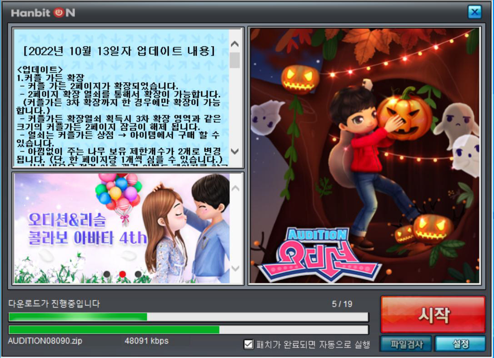
Before
Before
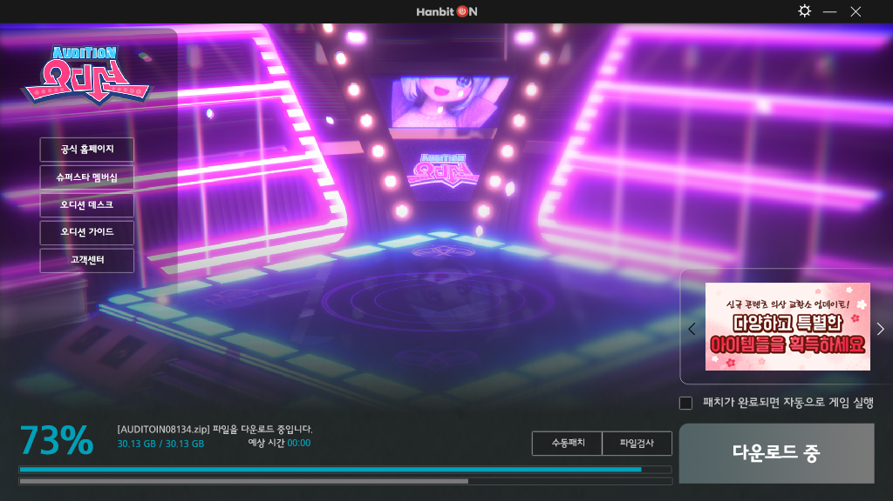
After
After
02 · 서버 & 채널
Design Decisions
초보자가 이해하기 어려운 구조를 단순화하여 선택 부담을 줄이고 필요한 정보에 집중하도록 개선.
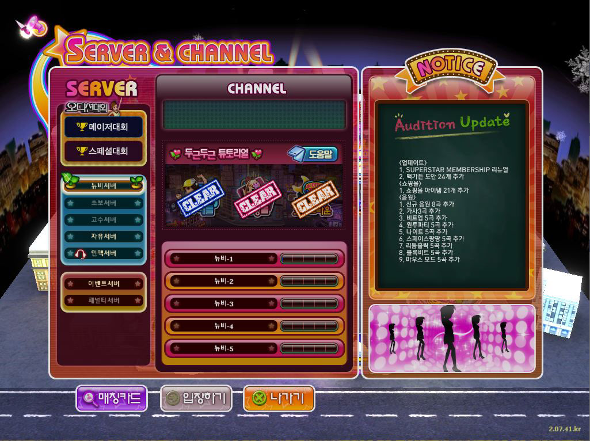
Before
Before
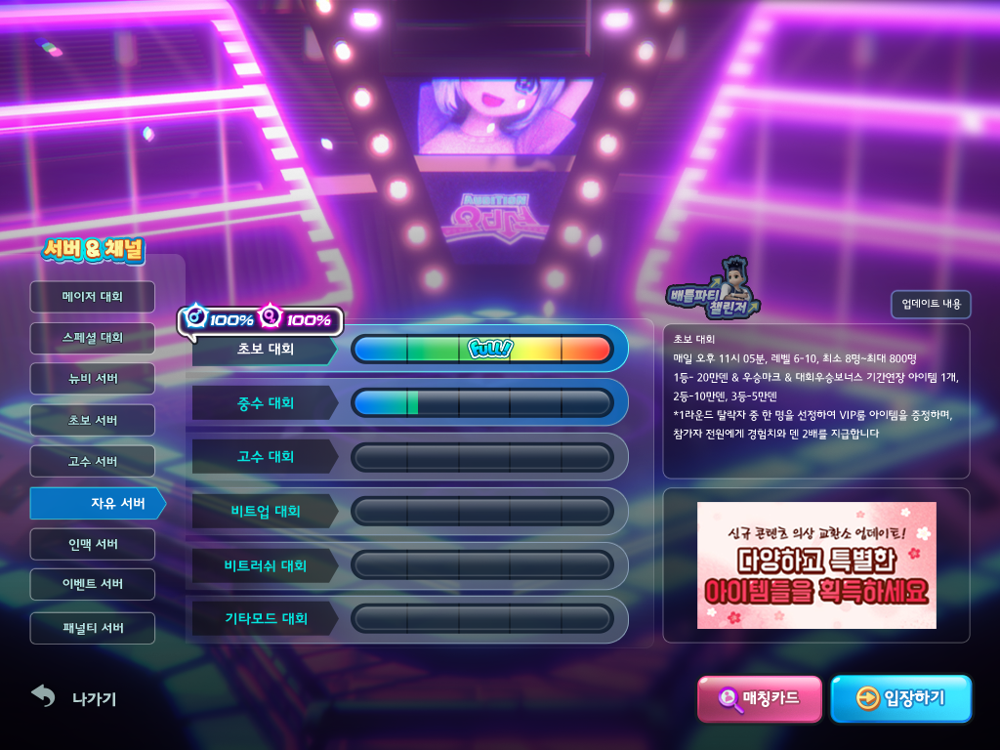
After
After
03 · 로딩
Design Decisions
한 달마다 변경되던 로딩 화면을 기본 로딩 화면으로 통합하여 운영 효율과 브랜드 일관성을 확보.
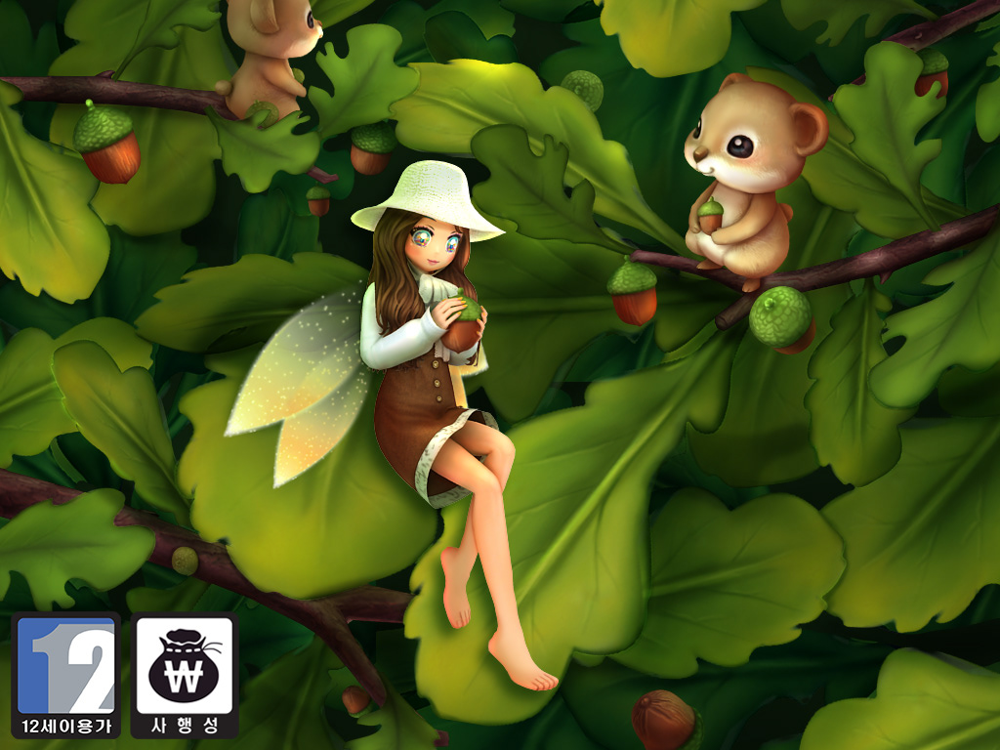
Before
Before
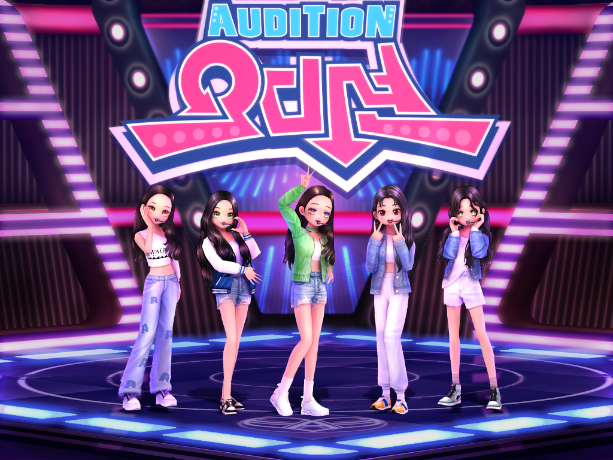
After · 기본 로딩
After · 기본 로딩
04 · 출석 이벤트
Design Decisions
플레이 시간을 강제하지 않고 접속 즉시 보상을 지급하여 부담 없는 참여 경험을 제공하도록 개선.
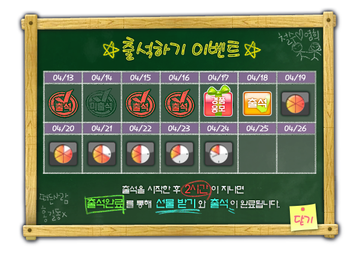
Before
Before
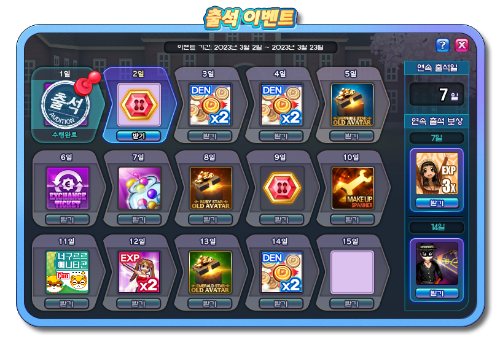
After
After
Result
시작 플로우를 전면 재설계하여 정보 구조를 정리하고, 신규 유저가 핵심 콘텐츠에 진입하는 경험을 간소화.
Project A-2 — PET & PETICON
New BM Content
신규 펫 시스템 (루미룸)
2022.07 – 2022.09
Peak Sales
3 Days
New BM
Content
Problem
장기간 서비스된 게임의 성장 한계와 신규 수익원 확보를 위해, 기존 콘텐츠와 차별화되는 신규 BM 콘텐츠가 필요했다.
Analysis
신규 BM은 단순한 판매 기능이 아니라, 플레이어가 지속적으로 성장시키고 애착을 가질 수 있는 콘텐츠일 때 장기적인 매출로 이어질 수 있다.
또한 신규 콘텐츠이면서도 기존 오디션의 감성을 유지하여 기존 이용자가 이질감 없이 받아들일 수 있어야 한다.
Solution
신규 BM 콘텐츠인 루미룸의 UI/UX를 설계하고, 세계관과 성장 구조, 연출을 하나의 경험으로 연결하여 플레이어가 자연스럽게 수집과 성장에 몰입할 수 있는 콘텐츠를 디자인.
Design Decision
01 · BM 경험
단순한 판매가 아닌 장기적으로 성장시키고 싶은 콘텐츠를 목표로 설계.
펫 획득부터 성장, 진화까지 하나의 지속적인 플레이 경험으로 구성.
02 · 세계관
우주와 은하계를 모티브로 신규 펫 시스템의 콘셉트를 설계.
배경, UI, 연출을 하나의 테마로 연결.
기존 오디션 UI와 이질감 없이 자연스럽게 연결되도록 디자인.
03 · 성장 경험
성장 단계별 변화를 직관적으로 전달하여 성취감을 강화.
메인 화면 → 보관 → 진화 → 완료까지 하나의 연속된 사용자 경험으로 설계.
04 · 협업
기획, 3D 아트와 협업하며 콘텐츠 방향성과 완성도를 함께 개선.
루미 뽑기 연출
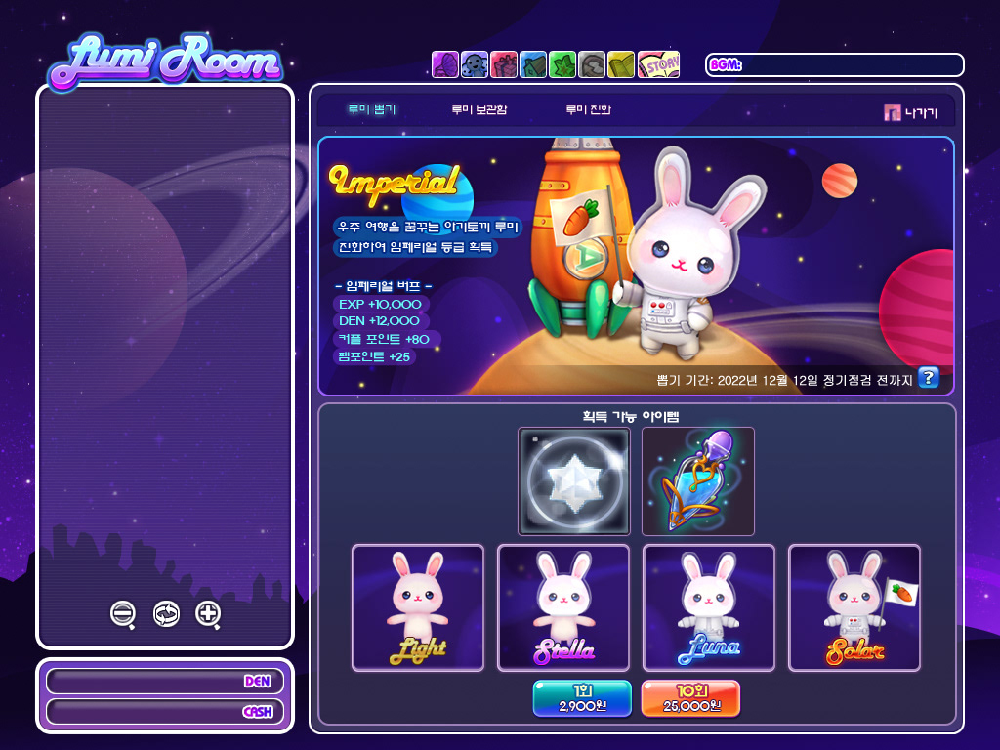
루미룸 메인
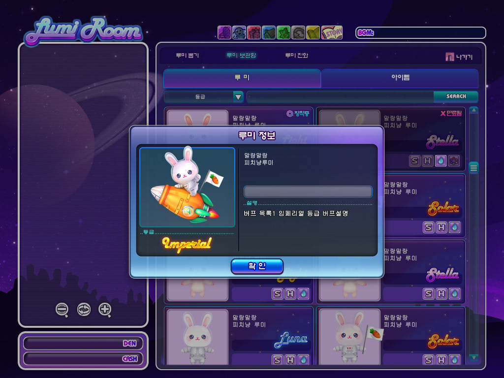
루미 보관함
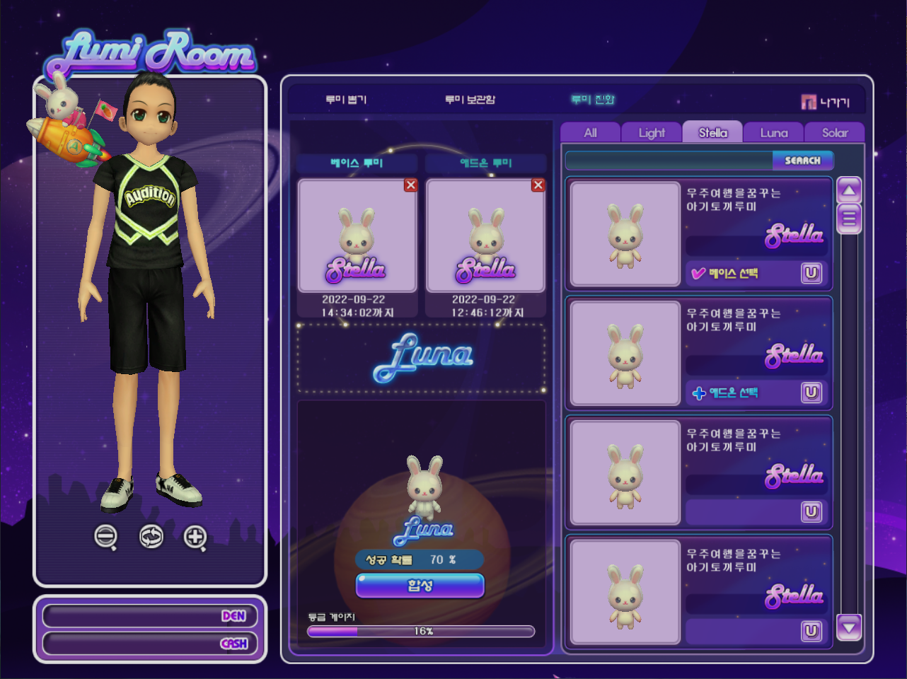
루미 진화
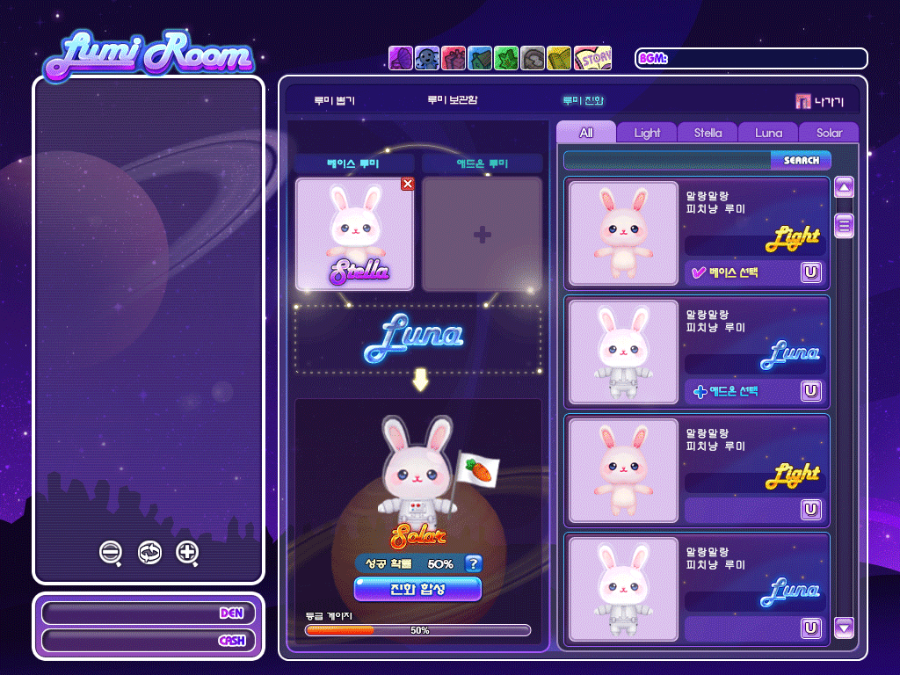
루미 진화연출
Result
• 업데이트 후 3일 만에 기존 최고 매출 기록을 경신하며 신규 BM 콘텐츠의 성공적인 서비스 안착에 기여.
• 회사의 신규 BM 전략을 지원하고 상장 준비 과정에 기여.
Season Promotion Redesign
오디매거진 → 오디네컷
Problem
기존 시즌 프로모션은 반복되는 매거진 형식으로 운영되어 신선도가 떨어지고 있었다.
Analysis
유행하는 인생네컷 포맷이 캐릭터 콘텐츠와 높은 친화성을 가진다고 판단하였다.
동일한 상품이라도 표현 방식을 변경하면 시즌 콘텐츠에 대한 관심과 참여를 높일 수 있다고 분석하였다.
Solution
기존 매거진 중심의 시즌 프로모션을 인생네컷 콘셉트로 리디자인하여 시즌성과 캐릭터 매력을 함께 전달하는 프로모션 콘텐츠로 개선하였다.
Design Decision
트렌드 반영
당시 유행하던 인생네컷 감성을 적용하여 시즌 콘텐츠의 신선도를 강화.
상품 표현
캐릭터 착용 모습을 자연스럽게 보여주어 의상의 매력을 전달.
운영 효율
기존 시즌 프로모션 구조는 유지하면서 비주얼 포맷만 개선.
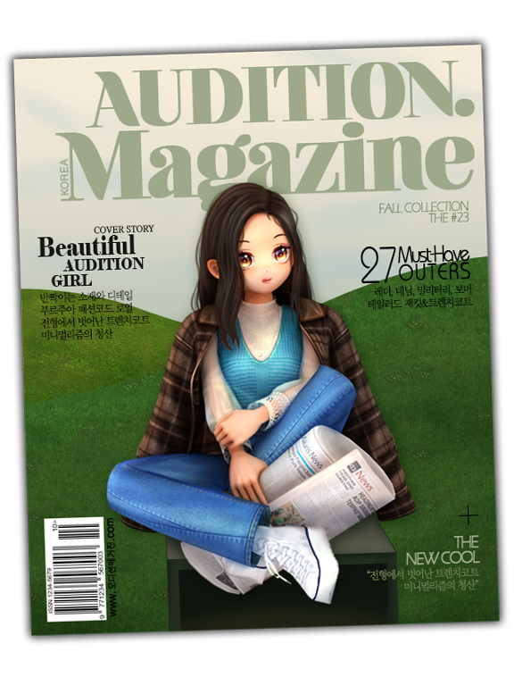
리뉴얼 전 · 오디매거진
리뉴얼 전 · 오디매거진
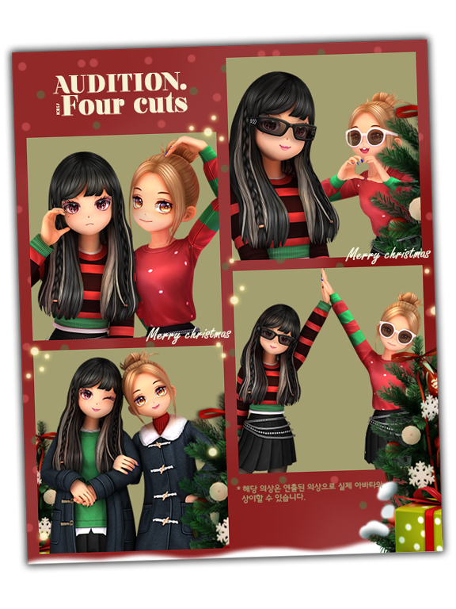
크리스마스
크리스마스
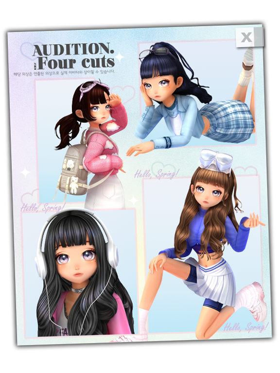
봄 시즌
봄 시즌
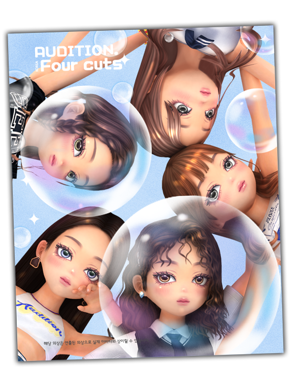
버블 시즌
버블 시즌
Result
• 유저 문의가 발생할 정도로 상품 노출 효과를 확보.
• 시즌 콘텐츠의 주목도를 높이는 프로모션 경험을 제공.